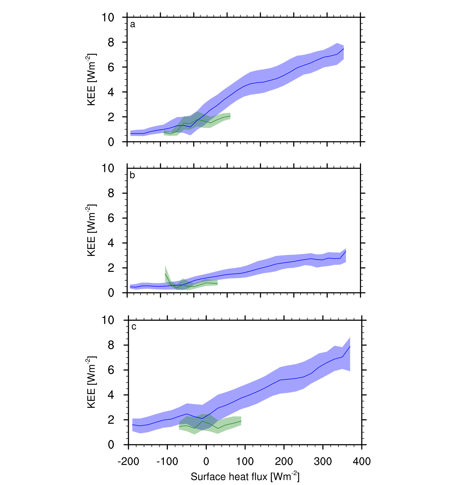

I posted this on our professional web site, but thought it useful to repost here.
Anna Possner and I recently published a study in the Proceedings of the National Academy of Sciences, titled “Geophysical potential for wind energy over the open oceans”.
It is well known that there is enough wind energy to power civilization, and that wind speeds tend to be higher over the open oceans. What wasn’t known was whether winds over the oceans tend to be stronger because the ocean presents a smooth surface without any mountains, trees, or houses to slow the flow, or whether there really is something special about the oceans that promotes stronger winds.
Anna performed a set of numerical climate model simulations to evaluate the maximum rate at which the atmosphere could transport kinetic energy (wind energy) downward to the surface, and how that varied from place to place and from season to season.
We noticed that there was a very strong correlation between the rate at which energy could be extracted near the surface (which becomes limited by the rate at which the atmosphere can transport energy downward) and the amount of heat streaming out of the ocean into the atmosphere. The following figure is Figure S10 from the Supporting Material for the paper mentioned above.

The land surface can store heat in the summer and release it in the winter but cannot transport heat from one place to another. In contrast, ocean currents can transport heat from low latitude to high latitude regions. Ocean heat transport can generate surface temperature contrasts (between land and sea and between different ocean areas). These temperature contrasts can contribute to unsettled and stormy activity in the atmosphere that can bring wind energy downward from the middle of the atmosphere towards the surface. Buoyancy forces may also play a role, with heat of the lower atmosphere inducing some rising motion that is compensated for by downward moving air with higher amounts of kinetic energy.
The specific mechanisms are yet to be worked out in detail, but the figure above shows a relatively tight and unexpected correlation between ocean-to-atmosphere heat fluxes and the maximum sustainable wind-energy extraction rates in those locations.
Anders Levermann asked me about global warming. Global warming induces a heat flux from the atmosphere to the ocean and so tends to reduce net ocean-to-atmosphere heat fluxes. Furthermore, heating of the ocean surface and increased high-latitude precipitation tend to increase the vertical stability of the upper ocean, inhibiting vertical mixing, and thus reducing atmosphere-ocean heat exchange. These changes are likely to be small relative to the magnitudes present in the background state, but would indicate that while today there is a huge wind energy resource in some open ocean environments, it could be a little smaller in a global warming scenario.
The scientific novelty of our study is in showing that the ocean really is different from the land when it comes to wind power potential, and that difference is largely due to the fact that the ocean can transport heat but the land cannot. There were several good press accounts of our work, and these press accounts emphasized the resource size. We appreciate the coverage we got and understand that science journalists need to focus on what will be most interesting to a broad audience and not necessarily on the contribution that will be most interesting to our scientific colleagues.
Some of the best journalistic accounts of our work can be found in these links (sorry if you are a journalist who did a great job but I didn’t see it or forgot to link to you here):
Saying “there is enough wind energy over the open oceans to power civilization” is a little like saying “there is enough solar energy over the Sahara desert to power civilization.” It is true but of little practical value if there are other ways to provide that energy that are much cheaper and easier, and perhaps with less adverse environmental consequence. Nevertheless, I think our study gives a green light to those developing floating wind farm technologies and suggests that they can focus on low-cost resolution of engineering challenges — and that they don’t need to worry about running out of resource.
Where to read more
- The publication this post is about: Geophysical potential for wind energy over the open oceans (Possner and Caldeira, 2017 · Proceedings of the National Academy of Sciences)
- Published article (doi:10.1073/pnas.1705710114)
- How much wind power can the atmosphere actually supply?